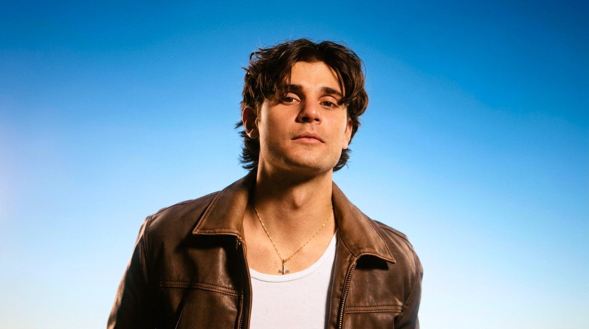
Aris ValentinoBooking
50+ shows since 2022 3× sold-out headline shows Sets up to 2 hours Own in-ear setup
Bio
Aris Valentino is the kind of artist you discover before everyone else does.
Raised in Germany’s Ruhr Valley with Greek-Cypriot roots, now based in Cologne. Before putting his own name on a record, he played ice hockey up to the youth national team, performed in theatre and spent years writing and producing for other artists. You can hear all of it: discipline and chaos in equal measure, a voice that stops you cold and a presence that fills the room before the first note. With his band he plays pop with a rock ’n’ roll soul, somewhere between Damiano David, Alex Warren and Miley Cyrus. Loud, honest and up close.
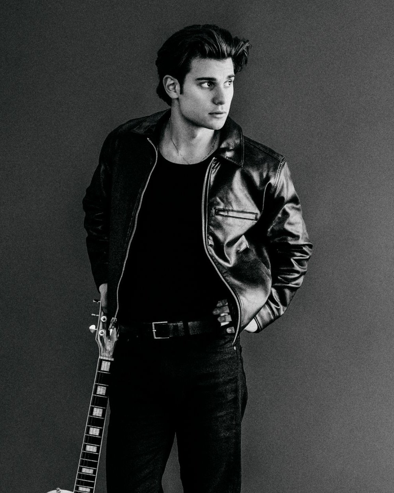
Read the full bio
Before Aris Valentino ever stepped on stage himself, he spent years behind the desk. He produced beats and wrote songs for hip-hop artists, around 200 of them. At some point that wasn’t enough. At the end of 2019 he took his first singing and guitar lessons. In 2020 he founded his own recording studio and label in Mettmann, and that is when it became clear: he didn’t just want to make songs for others, he wanted to be on stage himself.
That drive didn’t come out of nowhere. Aris was born in Oberhausen, lived in Essen and now calls Cologne home. He is the grandson of Greek guest workers and of a Cypriot family that lost everything in the war on Cyprus and started over anyway. From them he learned to keep going. It shaped him in ice hockey, where he made it to the youth national team, on the theatre stage and finally in music.
In 2021 he released his first single, “Showtime”. A year later came the album “Rock is Red”, his answer to “rock is dead”. By the end of 2022 the band was complete, and together they have played more than 50 shows since. WDR Lokalzeit dedicated a feature to him and aired the music video for “Wonda”.
Live is where Aris is most himself: pure energy, with moments in between that suddenly turn quiet and close. At the sold-out “Aris Valentino Show” in Essen he played for almost two hours, with a light show, choreography, an acoustic set and an unannounced aftershow. Add to that stages like Bochum Total, Zeltfestival Ruhr and Kessel-Festival in Stuttgart.
Right now he is working on LIFELINE, his new album. It is a fresh start, fully pop this time. Not a break with the past, but a search for the sound that tells his story best.
Listen
CHANGES
2026 · Single
Press
“I haven’t seen stage presence like Aris Valentino’s in a long time.”Heike Leppkes · Editor-in-chief, SYLB
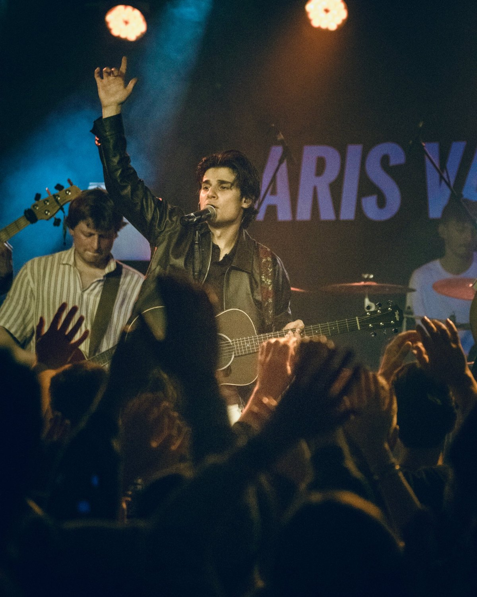
Photos
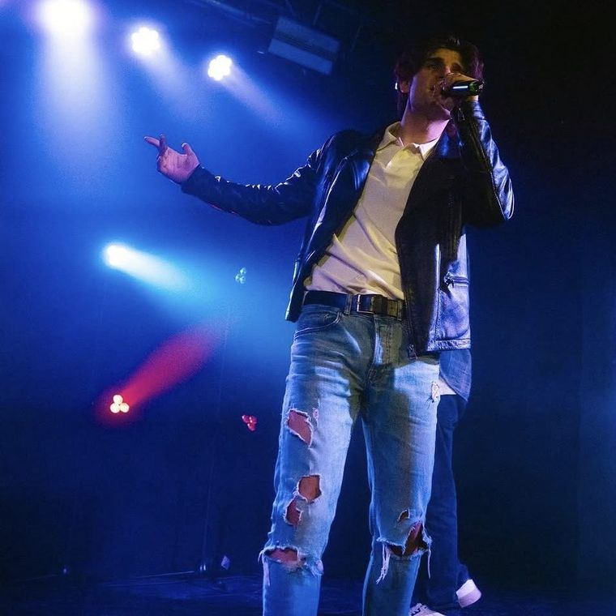
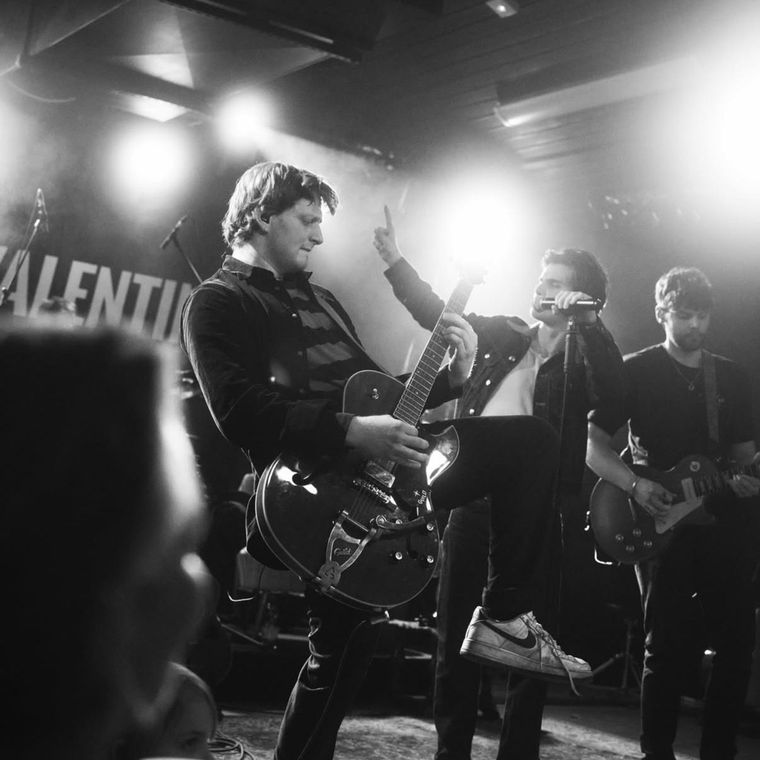
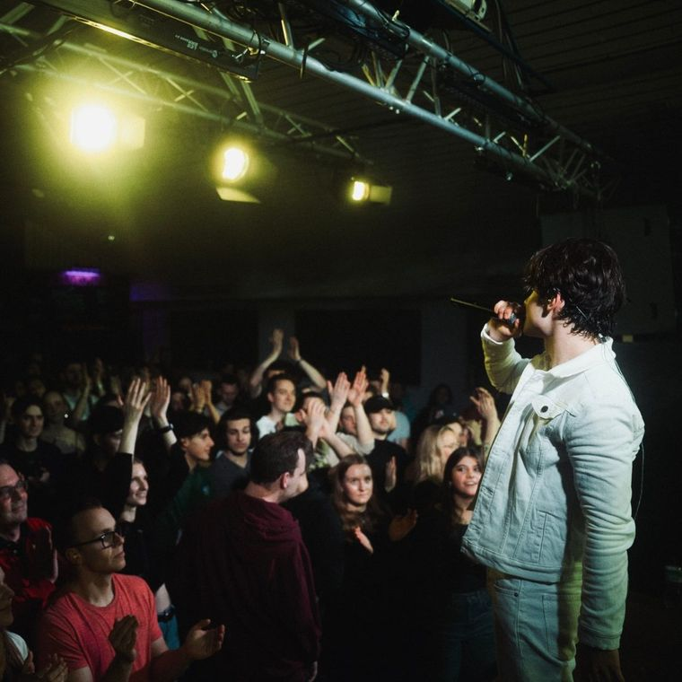
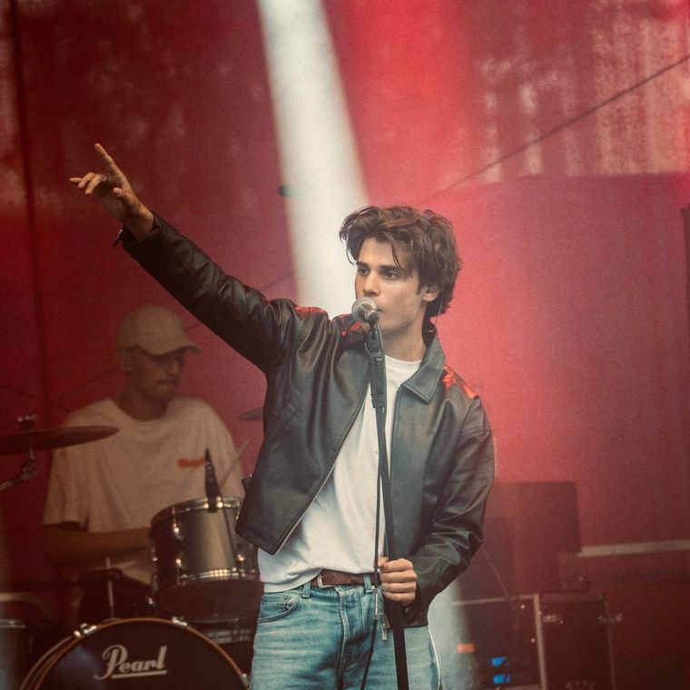
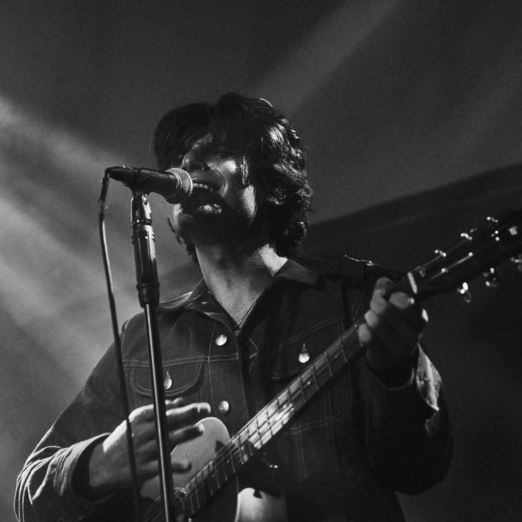
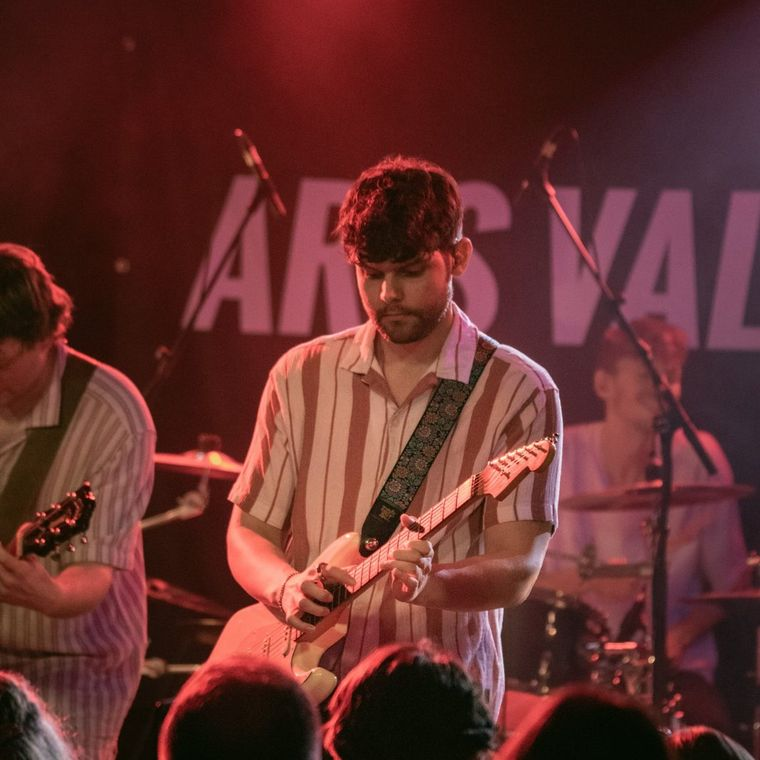
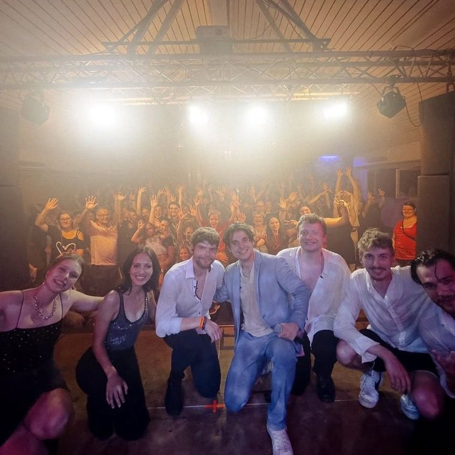
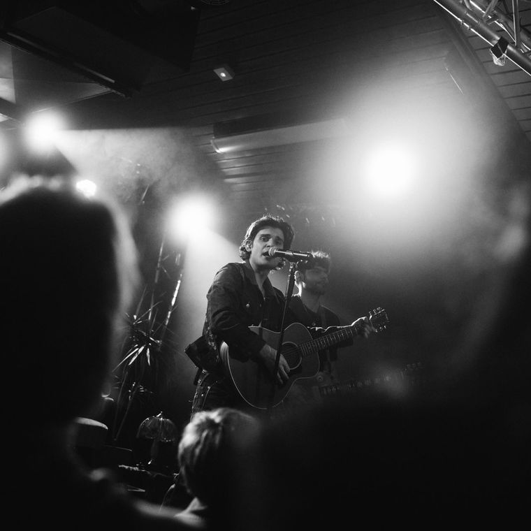
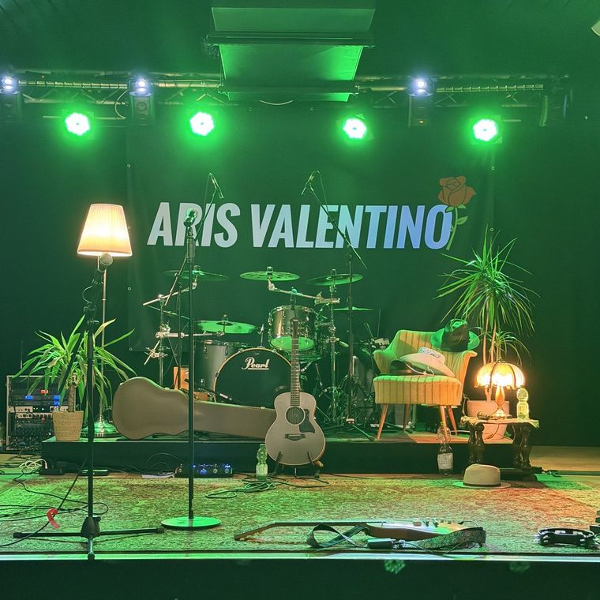
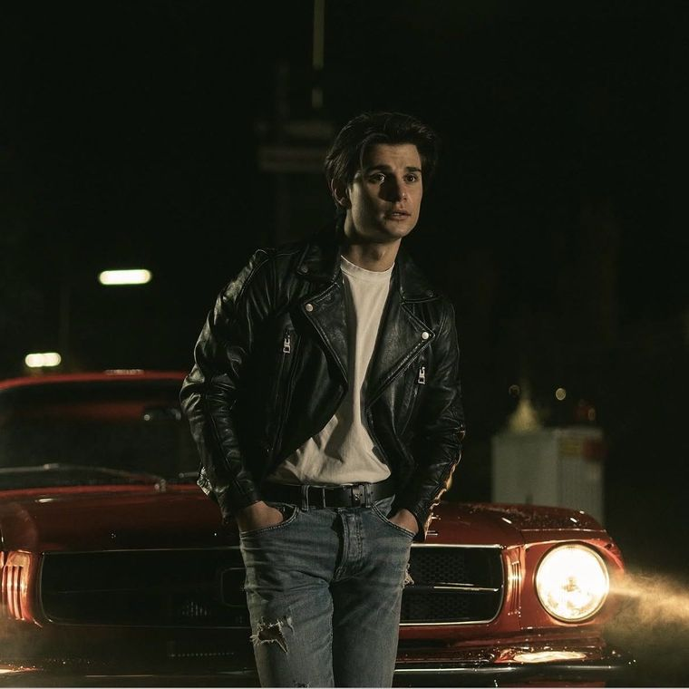
Stages
- Bochum Total
- Zeltfestival Ruhr
- Projekt Rüttenscheid
- Kessel-Festival
- TUNIX Open Air
- Bochumer Musiksommer
- Bass & Büdchen
- Cologne Music Week
- zakk Straßenfest
- Pannekaukenfest
- Herdecker Maiwoche
- Radio Dogs Festival
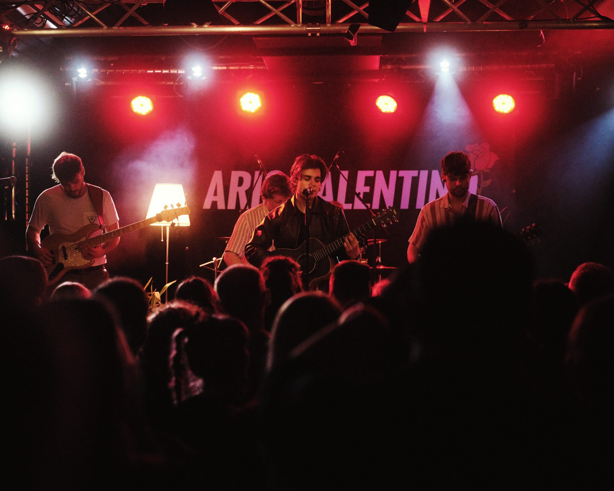
Band
- Aris ValentinoVocals
- Niklas BischopLead guitar
- Felix MartinRhythm guitar
- Samuel BojkoBass
- Simon FinzelDrums
Tech
- Festival-ready, self-sufficient setup
- 5 musicians: vocals, 2 guitars, bass, drums
- Own in-ear monitoring with digital mixer and splitter
- Stereo backing tracks with redundant playback
Show archive
50+ shows since 202220269 shows
- 04.10.26RocktoberEssen-Kettwig
- 13.09.26PannekaukenfestSchwerte
- 30.08.26Bass & Büdchen FestivalCologne
- 29.08.26Private eventDortmund
- 22.08.26Zeltfestival RuhrBochum
- 04.07.26Bochum TotalBochum
- 29.05.26MayhemDortmund
- 16.05.26Herdecker MaiwocheHerdecke
- 28.02.26Hüweg · Once Upon A TimeHeadline showSold outEssen
20258 shows
- 12.12.25Bochum SoundzBochum
- 29.11.25Kulturtandem 2025Essen
- 18.10.25RocktoberDortmund
- 18.10.25Private event
- 11.10.25ZirkusHückelhoven
- 27.09.25Nacht der JugendkulturHerdecke
- 13.09.25PannekaukenfestSchwerte
- 16.08.25Ruhrorter HafenfestDuisburg
202418 shows
- 29.11.24Kulturtandem 2024Duisburg
- 22.11.24Acoustic JamDüsseldorf
- 02.10.24Duisburger Spätschicht XXLDuisburg
- 28.09.24Nacht der JugendkulturHerdecke
- 31.08.24The Aris Valentino ShowHeadline showSold outEssen
- 27.08.24zakk StraßenfestDüsseldorf
- 25.08.24Bochumer MusiksommerBochum
- 12.08.24Acoustic JamDüsseldorf
- 06.07.24Essendiese ProjektEssen-Rüttenscheid
- 05.07.24Bochum TotalBochum
- 05.07.24Duisburger KirmesDuisburg
- 02.07.24TUNIX Open AirMunich
- 24.06.24Kessel-FestivalStuttgart
- 18.05.24zakkDüsseldorf
- 11.05.24Herdecker MaiwocheHerdecke
- 10.05.24MayhemDortmund
- 16.03.24Warehouse Stage · online live streamOnline
- 03.02.24The Aris Valentino ShowHeadline showSold outEssen
202313 shows
- 03.11.23Falkenzentrum SüdEssen
- 27.10.23Open Deck Cologne Bus · Cologne Music WeekCologne
- 29.09.23ZirkusHückelhoven
- 24.09.23Nacht der JugendkulturHerdecke
- 05.07.23Ruhrcomer band contest · final2nd placeRuhrgebiet
- 17.06.23Rock'n'Pop SpiritDüsseldorf
- 09.06.23Ruhrcomer band contest · preliminary roundAdvancedRuhrgebiet
- 27.05.23Radio Dogs FestivalAhaus
- 13.05.23Good Festival · CentroOberhausen
- 06.05.23MayhemDortmund
- 28.04.23Hüweg · support for FarbklangEssen
- 21.04.23Acoustic JamDüsseldorf
- 18.02.23Jetzt oder nieEssen
20223 shows
- 10.12.22KultOnTourEssen
- 04.12.22Citybeats final2nd placeDüsseldorf
- 28.10.22HüwegEssen
Contact
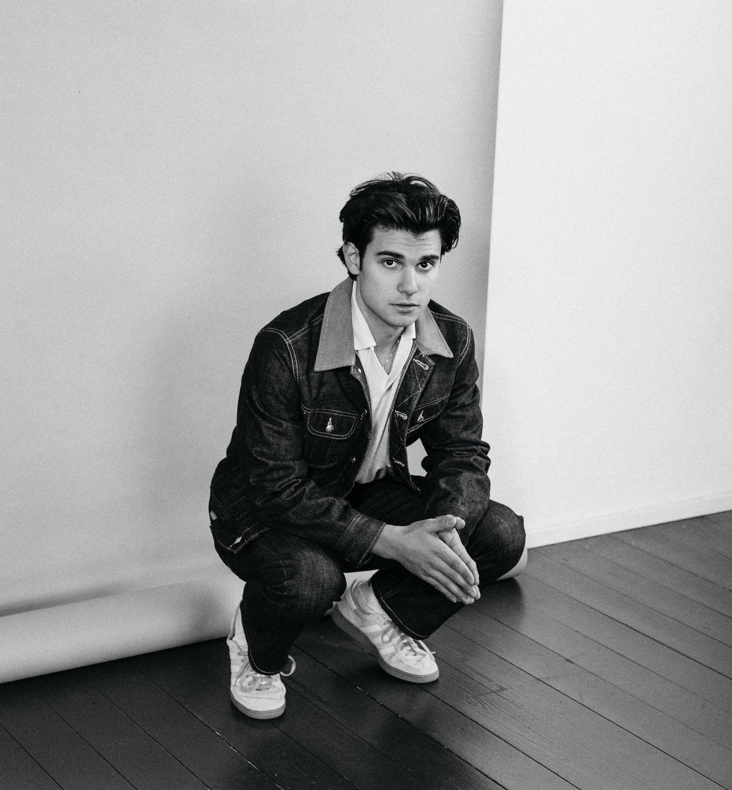